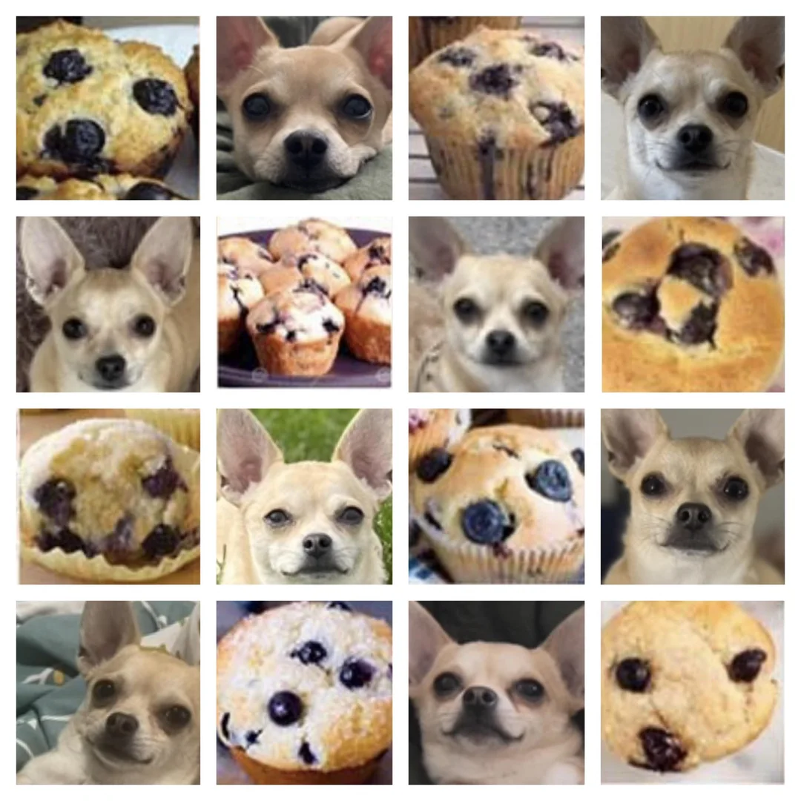
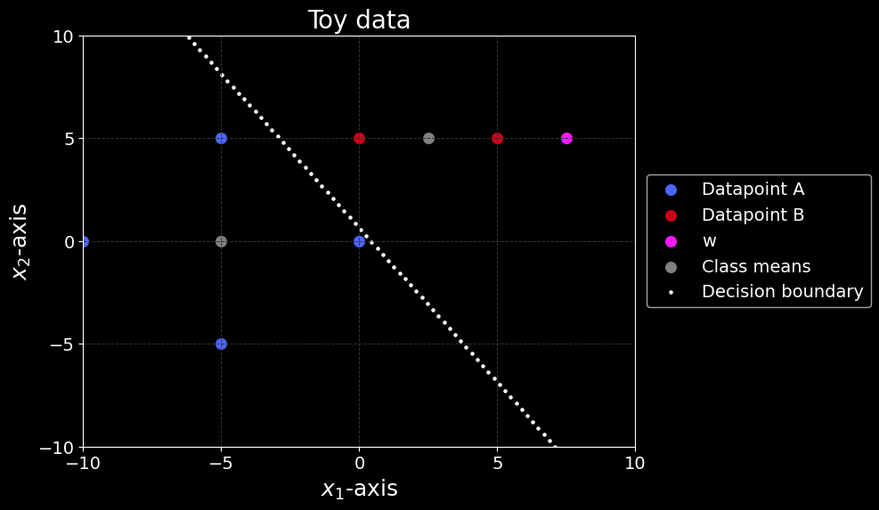
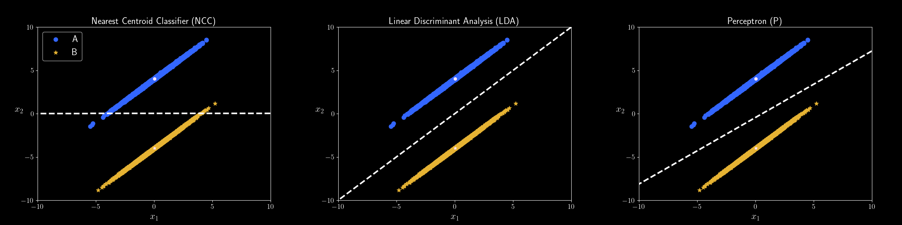
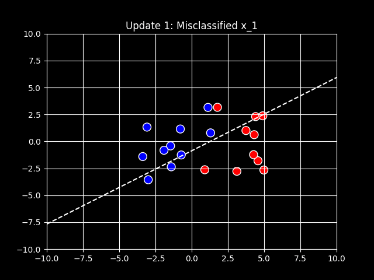
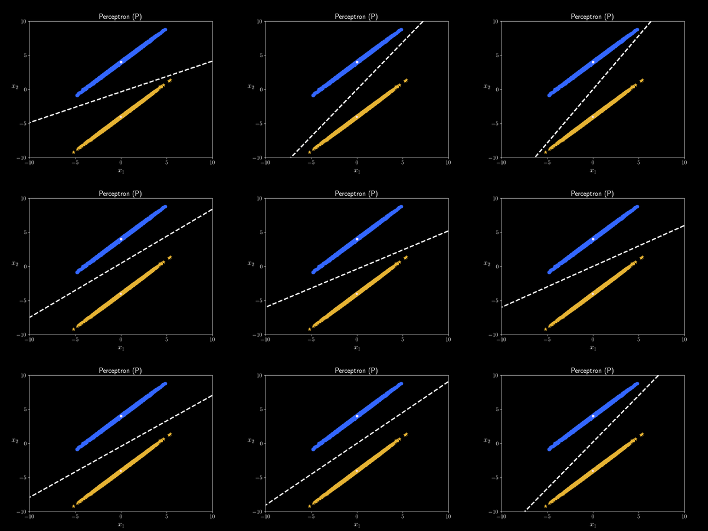
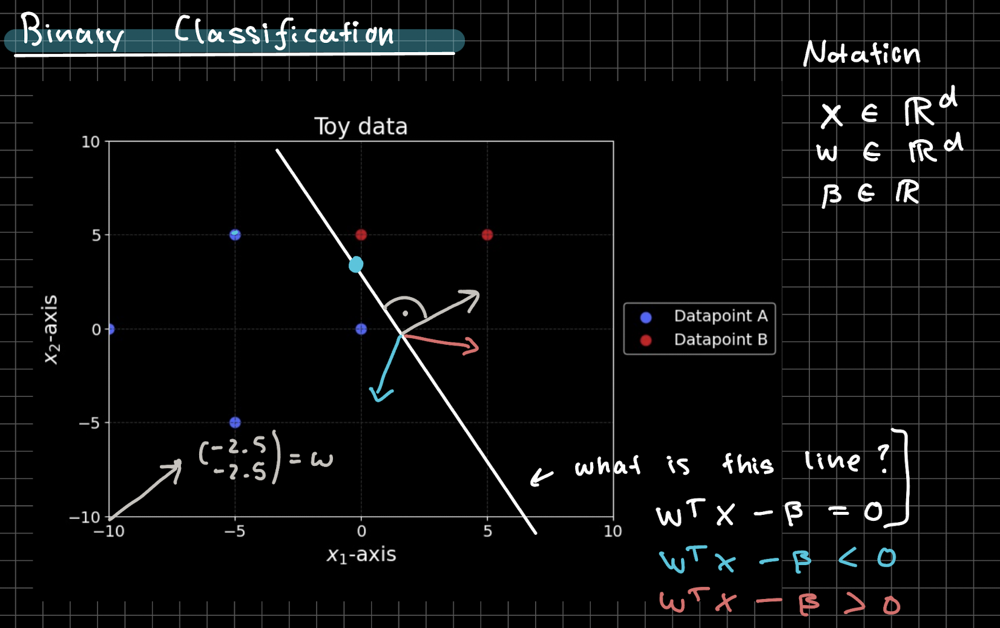
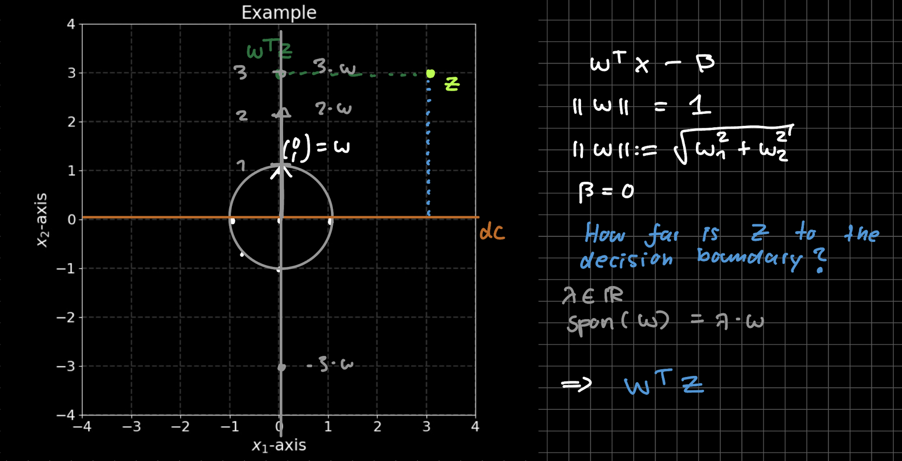
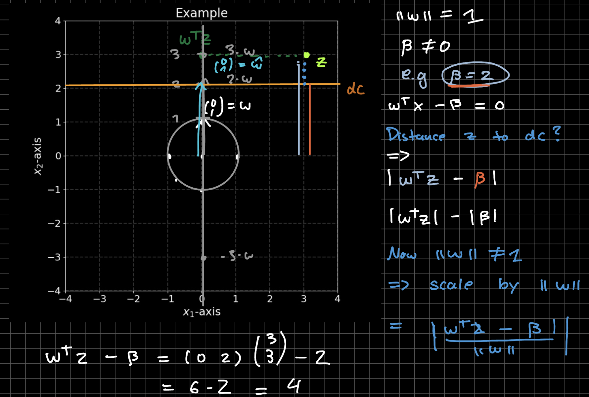
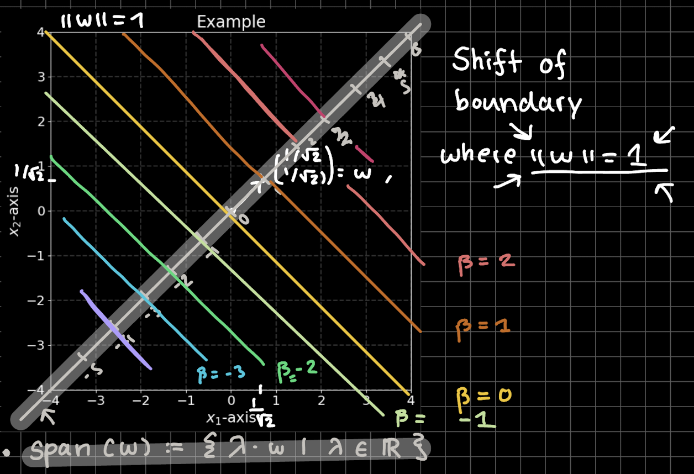

Hannah Louisa Boldt h.boldt@campus.tu-berlin.de
You have to take an elective.
Written Homework and Quizzes every week. You can earn 10 points in total.
I corrected everyone's first sheet, if you have any questions please ask me.
Any Questions?

Chihuahua or muffin?

predict class labels of future unlabeled datapoints
Let $w,x_{new} \in \mathbb{R}^n$ and $\beta \in \mathbb{R}$ then we can predict by \begin{align*} f(x_{new}) = sign(w^\top x_{new} - \beta) = \hat{y}_{new} \end{align*}
$w$ and $\beta$ determine how the decision boundary looks like

Comparison of NCC, LDA, and Perceptron decision boundaries
NCC: Based on Similarity along dimensions e.g. height of dog , Minimum can be explicitly calculated.
Based on this idea how do we calculate the decision boundary?
Minimize the following loss function: \begin{align*} \mathcal{L}_{\mathcal{P}}: \mathbb{R}^d \to \mathbb{R}, \quad w\mapsto - \sum_{m\in \mathcal{M}}w^\top x_m y_m \end{align*}
Counts how many datapoints are misclassified
Based on this idea how do we calculate the decision boundary?
@3Blue1Brown explains how to use gradient descent in Multilayer Perceptron, but the same idea applies to Perceptron learning $C(w) = \mathcal{L}_p(w)$.
\( \mathcal{L}_m(w) = - w^T\)\(x_m\)\( y_m \)
\( \nabla_w \mathcal{L}_m(w) = - \)\(x_m\)\( y_m \)
Update Step with step size \( \eta \in \mathbb{R}^+\):
\( \mathbf{w}^{new} \leftarrow \mathbf{w}^{old} - \eta \nabla_w \mathcal{L}_m(\mathbf{w}^{old}) = \mathbf{w}^{old} + \eta \)\(x_m\)\( y_m \)

Maximum number of steps is set to 20

Outcome of Perceptron Learning can be different on the same dataset.
Comparison of NCC, LDA, and Perceptron decision boundaries

Decision boundary decides which class points are assigned to

Decision boundary decides which class points are assigned to

Decision boundary decides which class points are assigned to

Decision boundary decides which class points are assigned to
Written notes can be found here: